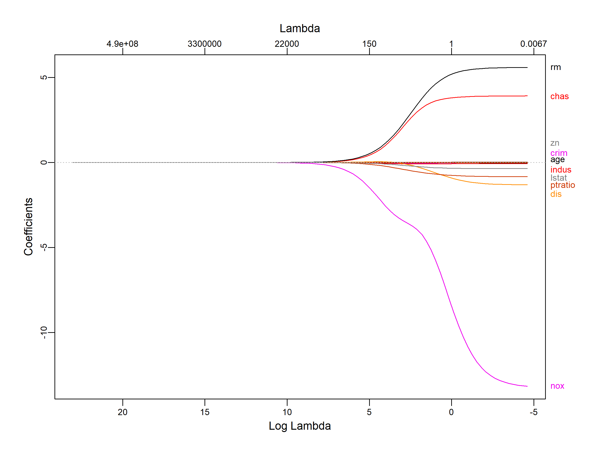
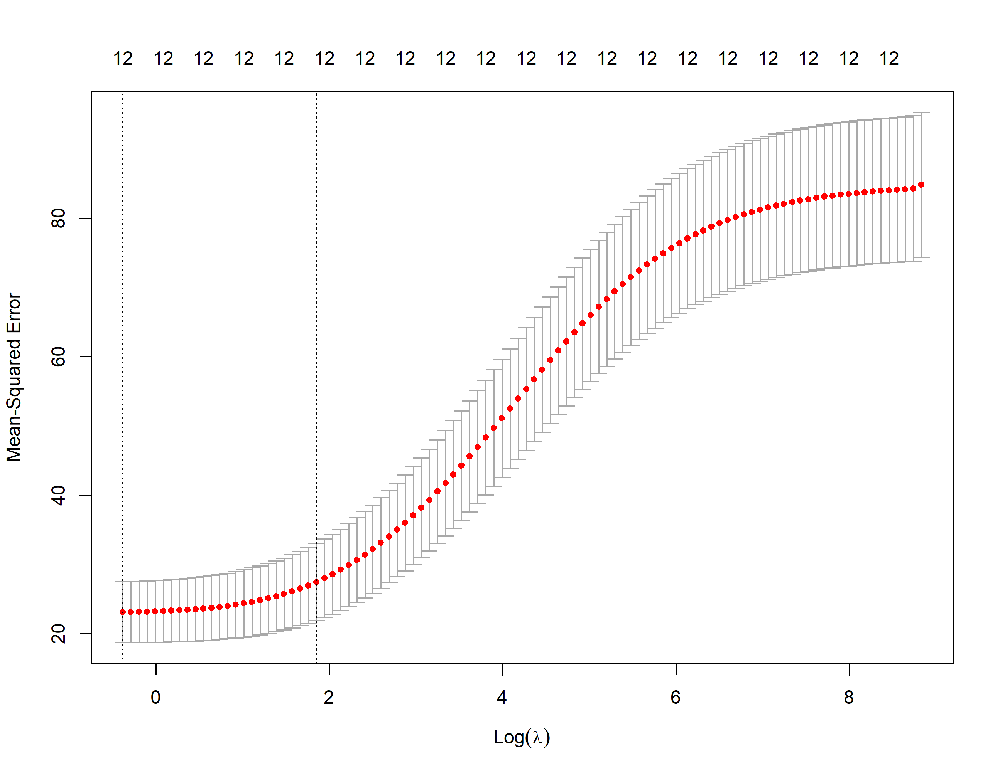
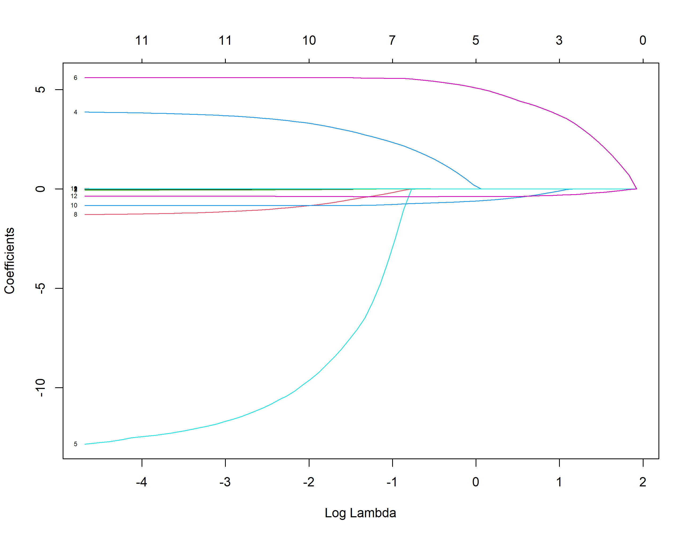
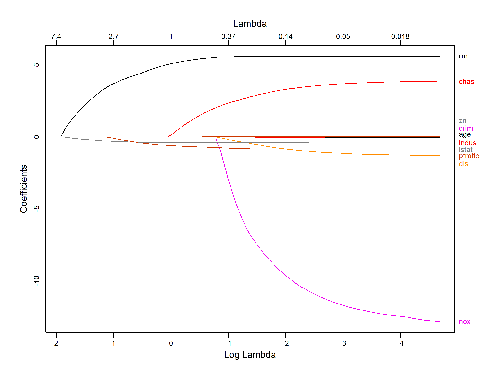
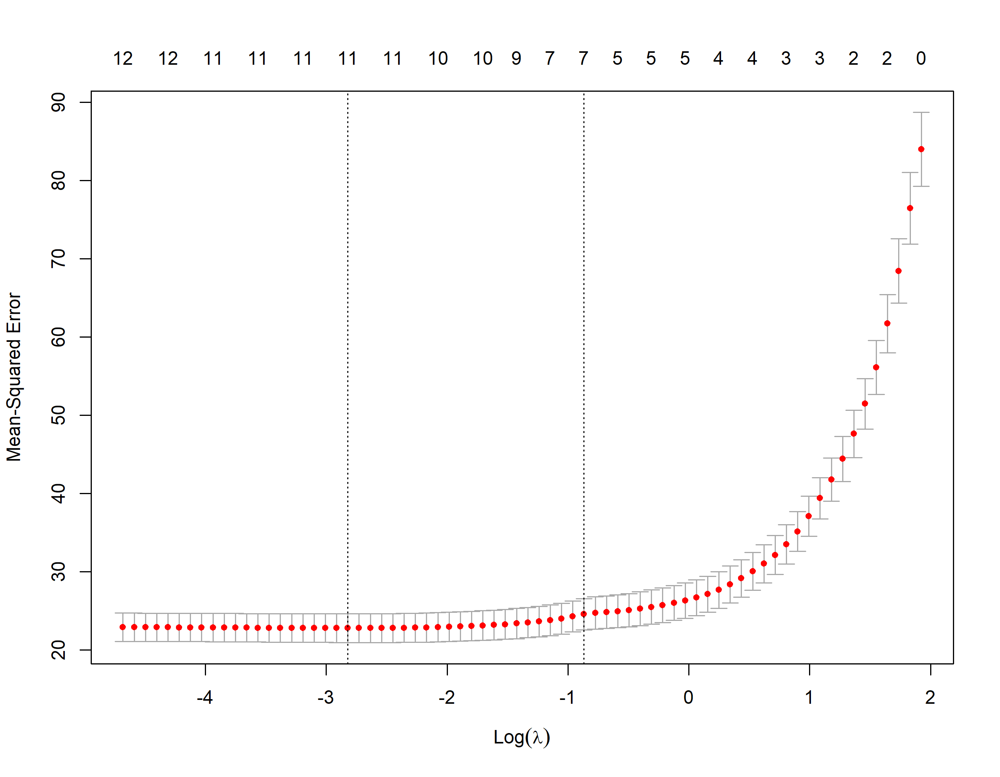
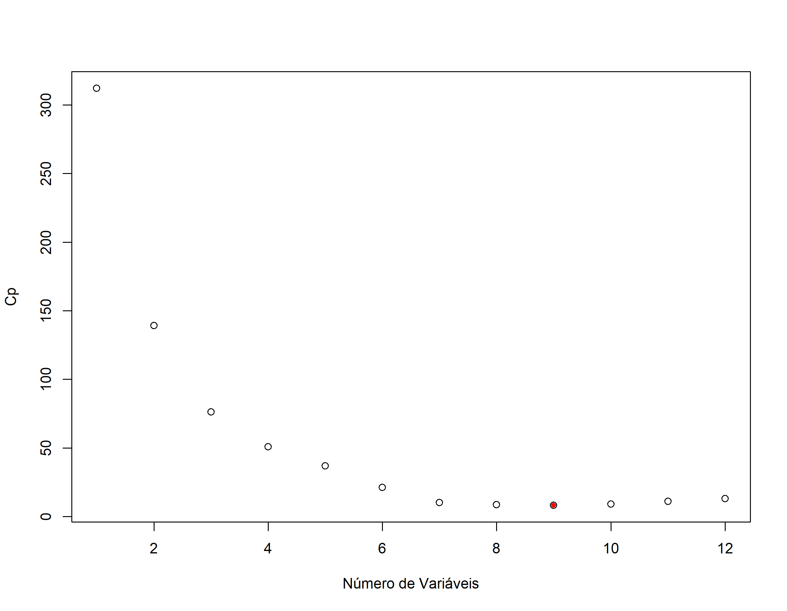
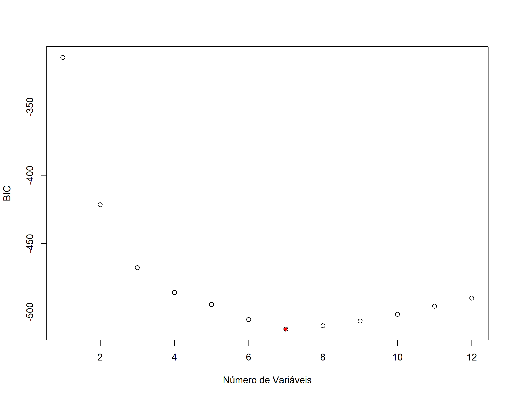

Regularização de Modelos
Regularização de modelos
Carregando Bibliotecas
Carregando os dados
Vamos utilizar neste exemplo os dados contidos na biblioteca MASS. A base de dados Boston tem 506 de valores preços medianos de casas na região de Boston com 13 outras variáveis explicativas (potencialmente). Vamos explorar os dados e ajustar modelos com penalização o Ridge e o LASSO e depois vamos comparar com os mínimos quadrados.
head(Boston) crim zn indus chas nox rm age dis rad tax ptratio black lstat
1 0.00632 18 2.31 0 0.538 6.575 65.2 4.0900 1 296 15.3 396.90 4.98
2 0.02731 0 7.07 0 0.469 6.421 78.9 4.9671 2 242 17.8 396.90 9.14
3 0.02729 0 7.07 0 0.469 7.185 61.1 4.9671 2 242 17.8 392.83 4.03
4 0.03237 0 2.18 0 0.458 6.998 45.8 6.0622 3 222 18.7 394.63 2.94
5 0.06905 0 2.18 0 0.458 7.147 54.2 6.0622 3 222 18.7 396.90 5.33
6 0.02985 0 2.18 0 0.458 6.430 58.7 6.0622 3 222 18.7 394.12 5.21
medv
1 24.0
2 21.6
3 34.7
4 33.4
5 36.2
6 28.7summary(Boston) crim zn indus chas
Min. : 0.00632 Min. : 0.00 Min. : 0.46 Min. :0.00000
1st Qu.: 0.08205 1st Qu.: 0.00 1st Qu.: 5.19 1st Qu.:0.00000
Median : 0.25651 Median : 0.00 Median : 9.69 Median :0.00000
Mean : 3.61352 Mean : 11.36 Mean :11.14 Mean :0.06917
3rd Qu.: 3.67708 3rd Qu.: 12.50 3rd Qu.:18.10 3rd Qu.:0.00000
Max. :88.97620 Max. :100.00 Max. :27.74 Max. :1.00000
nox rm age dis
Min. :0.3850 Min. :3.561 Min. : 2.90 Min. : 1.130
1st Qu.:0.4490 1st Qu.:5.886 1st Qu.: 45.02 1st Qu.: 2.100
Median :0.5380 Median :6.208 Median : 77.50 Median : 3.207
Mean :0.5547 Mean :6.285 Mean : 68.57 Mean : 3.795
3rd Qu.:0.6240 3rd Qu.:6.623 3rd Qu.: 94.08 3rd Qu.: 5.188
Max. :0.8710 Max. :8.780 Max. :100.00 Max. :12.127
rad tax ptratio black
Min. : 1.000 Min. :187.0 Min. :12.60 Min. : 0.32
1st Qu.: 4.000 1st Qu.:279.0 1st Qu.:17.40 1st Qu.:375.38
Median : 5.000 Median :330.0 Median :19.05 Median :391.44
Mean : 9.549 Mean :408.2 Mean :18.46 Mean :356.67
3rd Qu.:24.000 3rd Qu.:666.0 3rd Qu.:20.20 3rd Qu.:396.23
Max. :24.000 Max. :711.0 Max. :22.00 Max. :396.90
lstat medv
Min. : 1.73 Min. : 5.00
1st Qu.: 6.95 1st Qu.:17.02
Median :11.36 Median :21.20
Mean :12.65 Mean :22.53
3rd Qu.:16.95 3rd Qu.:25.00
Max. :37.97 Max. :50.00 Observamos acima que todas as variáveis são quantitativas e que não há necessidade de transformações.
Significado das variáveis
# Boston Database
#
#1) crim - taxa de criminalidade per capita por cidade.
#
#2) zn - proporção de terrenos residenciais para lotes acima de 25,000 sq.ft.
#
#3) indus - proporção de negócios não comerciais por acres e por cidade.
#
#4) chas - variável dummy do Rio Charles(= 1 se próximo do rio; 0 de outra forma).
#
#5) nox - concentração de óxido de nitrogênio (partes por 10 milhões).
#
#6) rm - número médio de quartos por habitação
#
#7) age - proporção da unidade ocupadas pelos proprietários construídas antes 1940.
#
#8) dis - média ponderada das distâncias dos 5 pontos de emprego em Boston.
#
#9) rad - indice de acessibilidade das avenidas radiais.
#
#10) tax - valor cheio da taxa de propriedade por $10,000.
#
#11) ptratio - razão aluno-professor por cidade.
#
#12) black - 1000(Bk−0.63)21000(Bk−0.63)2 proporção de negros por cidade.
#
#13) lstat - percentual de baixo status da população.
#
#14) medv - valor mediano das cas ocupadas pelos proprietário em $1000s. (Var. Resposta)Conjunto de treino e de teste
Observar que retiramos a variável rad
library(caret)
set.seed(21)
y <- Boston$medv
indice_teste <- createDataPartition(y, times = 1, p = 0.2, list = FALSE)
conj_treino <- Boston %>% slice(-indice_teste)
conj_treino <- conj_treino %>% select(-rad)
conj_teste <- Boston %>% slice(indice_teste)
conj_teste <- conj_teste %>% select(-rad)
str(conj_treino)'data.frame': 403 obs. of 13 variables:
$ crim : num 0.00632 0.02731 0.02729 0.03237 0.06905 ...
$ zn : num 18 0 0 0 0 0 12.5 12.5 12.5 12.5 ...
$ indus : num 2.31 7.07 7.07 2.18 2.18 2.18 7.87 7.87 7.87 7.87 ...
$ chas : int 0 0 0 0 0 0 0 0 0 0 ...
$ nox : num 0.538 0.469 0.469 0.458 0.458 0.458 0.524 0.524 0.524 0.524 ...
$ rm : num 6.58 6.42 7.18 7 7.15 ...
$ age : num 65.2 78.9 61.1 45.8 54.2 58.7 66.6 96.1 85.9 94.3 ...
$ dis : num 4.09 4.97 4.97 6.06 6.06 ...
$ tax : num 296 242 242 222 222 222 311 311 311 311 ...
$ ptratio: num 15.3 17.8 17.8 18.7 18.7 18.7 15.2 15.2 15.2 15.2 ...
$ black : num 397 397 393 395 397 ...
$ lstat : num 4.98 9.14 4.03 2.94 5.33 ...
$ medv : num 24 21.6 34.7 33.4 36.2 28.7 22.9 27.1 18.9 15 ...str(conj_teste)'data.frame': 103 obs. of 13 variables:
$ crim : num 0.211 0.63 0.627 1.252 0.852 ...
$ zn : num 12.5 0 0 0 0 0 0 75 0 0 ...
$ indus : num 7.87 8.14 8.14 8.14 8.14 8.14 8.14 2.95 6.91 6.91 ...
$ chas : int 0 0 0 0 0 0 0 0 0 0 ...
$ nox : num 0.524 0.538 0.538 0.538 0.538 0.538 0.538 0.428 0.448 0.448 ...
$ rm : num 5.63 5.95 5.83 5.57 5.96 ...
$ age : num 100 61.8 56.5 98.1 89.2 94.1 96.9 21.8 6.5 95.3 ...
$ dis : num 6.08 4.71 4.5 3.8 4.01 ...
$ tax : num 311 307 307 307 307 307 307 252 233 233 ...
$ ptratio: num 15.2 21 21 21 21 21 21 18.3 17.9 17.9 ...
$ black : num 387 397 396 377 393 ...
$ lstat : num 29.93 8.26 8.47 21.02 13.83 ...
$ medv : num 16.5 20.4 19.9 13.6 19.6 12.7 13.5 30.8 24.7 14.4 ...Métodos de Regularização
O pacote glmnet não usa a linguagem de formula, em particular nós devemos passar \(x\) como uma matriz e \(y\) como um vetor, pois não se usa a sintaxe \(y \sim x\). Com isso será necessário ajustar x e y. A função model.matrix() é particularmente útil para criar x; não só produz uma matriz correspondente as variáveis explicativas, mas também transforma automaticamente quaisquer variáveis qualitativas em variáveis dummy. Esta última propriedade é importante porque o glmnet() só pode tomar insumos numéricos e quantitativos.
x_treino <- model.matrix(medv ~ . , data = conj_treino)[, -1]
y_treino <- conj_treino$medv
x_teste <- model.matrix(medv ~ . , data = conj_teste)[, -1]
y_teste = conj_teste$medvRegressão Ridge
Primeiro vamos ajustar um modelo de regressão Ridge. Isso é conseguido chamando glmnet() com alpha=0, se alpha=1 então glmnet() ajusta um lasso.(veja o arquivo de ajuda).
Por padrão, a função glmnet() executa a regressão ridge automaticamente selecionando a faixa de valores de \(\lambda\). No entanto, aqui nós escolhemos implementar usando uma grade de valores que variam de \(\lambda = 10^{-2}\) a \(\lambda = 10^{10}\), cobrindo toda a gama de cenários do modelo nulo contendo apenas o coeficiente linear até o ajuste dos mínimos quadrados.
Também podemos calcular o modelo para um valor particular de \(\lambda\) que não é um dos valores de grade. Observe que, por padrão, a função glmnet() padroniza as variáveis para que elas estejam na mesma escala. Esta padronização é muito importante no caso da regressão Ridge, pois ela é afetada pela mudança de escala das variáveis explicativas.
Associado a cada valor de \(\lambda\) existe um vetor de coeficientes de regressão de ridge, que é armazenado em uma matriz que pode ser acessada por ‘coef()’. Neste caso, é uma matriz \(13 \times 100\), com 13 linhas (uma para cada preditor, mais uma para o coeficiente linear) e 100 colunas (uma para cada valor de \(\lambda\)).
Quando \(\lambda\) é grande o esperado é que os coeficentes sejam pequenos e quando \(\lambda\) é pequeno os coeficientes assumem valores maiores.
ajusreg.ridge$lambda[1] # Mostra primeiro valor de lambda[1] 1e+10coef(ajusreg.ridge)[,1] # Mostra os coeficientes associados com o primeiro valor (Intercept) crim zn indus chas
2.247246e+01 -4.109894e-10 1.380771e-10 -6.245296e-10 6.798952e-09
nox rm age dis tax
-3.138930e-08 9.031398e-09 -1.154044e-10 1.094430e-09 -2.354379e-11
ptratio black lstat
-2.000167e-09 3.131126e-11 -8.446650e-10 ajusreg.ridge$lambda[100] # Mostra centésimo valor de lambda[1] 0.01coef(ajusreg.ridge)[,100] # Mostra os coeficientes associados com o centésimo valor (Intercept) crim zn indus chas
1.678767e+01 -1.657453e-02 2.307677e-02 -6.932521e-02 3.914065e+00
nox rm age dis tax
-1.315187e+01 5.586213e+00 -2.297883e-02 -1.312388e+00 6.917237e-04
ptratio black lstat
-8.347461e-01 1.262501e-02 -3.575121e-01 library(plotmo)
plot_glmnet(ajusreg.ridge)
Cross-Validation no Ridge
Nós podemos usar o k-fold cross validation para identificar o melhor valor de \(\lambda\)
A biblioteca glmnet já tem internamente uma função para uso do crosss validation. O default são 10 envelopes de dados nfold=10.

m_lamb <- ridge_cv$lambda.min # Seleciona o lambda que minimiza o MSE (EQM) de treino
m_lamb[1] 0.6844251log(m_lamb)[1] -0.3791761coef(ridge_cv, s=m_lamb)13 x 1 sparse Matrix of class "dgCMatrix"
s1
(Intercept) 14.7144706557
crim -0.0214927174
zn 0.0200504882
indus -0.0735317662
chas 3.8343862492
nox -9.4460044931
rm 5.3120091904
age -0.0185326152
dis -1.0110801641
tax -0.0003434427
ptratio -0.7785448609
black 0.0116393260
lstat -0.3465721929Avaliando com conjunto de teste
Em seguida avaliamos seu MSE no conjunto de teste, usando \(\lambda\) = m_lamb. Observe o uso da função ‘predict()’: desta vez temos previsões para um conjunto de teste, com o argumento newx.
LASSO
Primeiro ajustamos com todos os dados como no caso do Ridge
ajusreg.lasso <- glmnet(x_treino,y_treino, alpha = 1)
plot(ajusreg.lasso, xvar="lambda", label=TRUE) # Representando os coeficientes
plot_glmnet(ajusreg.lasso)
Validação Cruzada no LASSO

m_lamb1 <- lasso_cv$lambda.min # Seleciona o lambda que minimiza o MSE de treino
m_lamb1[1] 0.0595278log(m_lamb1)[1] -2.821312coef(lasso_cv, s=m_lamb1)13 x 1 sparse Matrix of class "dgCMatrix"
s1
(Intercept) 14.763435253
crim -0.006217225
zn 0.017479823
indus -0.050830256
chas 3.644367387
nox -11.463040415
rm 5.608066407
age -0.018352749
dis -1.107502465
tax .
ptratio -0.825247011
black 0.012263992
lstat -0.362939273Avaliando com conjunto de teste
Comparando com a seleção de modelos usando o Cp
library(leaps)
ajusreg.comp <- regsubsets(medv ~ ., data=conj_treino, nvmax=12)
sumario.reg <- summary(ajusreg.comp)
## Os modelos vão ser escolhidos com base no menor Cp
plot(sumario.reg$cp,xlab="Número de Variáveis",ylab="Cp")
which.min(sumario.reg$cp)[1] 9points(9,sumario.reg$cp[9],pch=20,col="red")
Ajustando no lm() e vendo o erro no conjunto de teste
Observando so resultados de erro vemos que tanto a regressão Ridge como o LASSO apresentaram valores de erro maiores que o modelo definido através da melhor seleção de modelos (best subset regression). Aqui usamos o Cp de Mallows como critério de deleção de variáveis.
coef(ajusreg.comp,9) (Intercept) zn chas nox rm age
17.03537172 0.02326045 3.81378291 -14.60482205 5.66380782 -0.02328124
dis ptratio black lstat
-1.26249225 -0.87101806 0.01301181 -0.36615078 outro_mod <- lm(medv ~ zn + chas + nox + rm + age + dis + ptratio + black + lstat, data=conj_treino)
summary(outro_mod)
Call:
lm(formula = medv ~ zn + chas + nox + rm + age + dis + ptratio +
black + lstat, data = conj_treino)
Residuals:
Min 1Q Median 3Q Max
-18.9383 -2.6575 -0.5304 1.7899 27.0979
Coefficients:
Estimate Std. Error t value Pr(>|t|)
(Intercept) 17.035372 5.393193 3.159 0.001707 **
zn 0.023260 0.014828 1.569 0.117534
chas 3.813783 1.008205 3.783 0.000179 ***
nox -14.604822 3.654556 -3.996 7.68e-05 ***
rm 5.663808 0.473979 11.949 < 2e-16 ***
age -0.023281 0.014296 -1.629 0.104207
dis -1.262492 0.209990 -6.012 4.19e-09 ***
ptratio -0.871018 0.125529 -6.939 1.64e-11 ***
black 0.013012 0.002708 4.806 2.20e-06 ***
lstat -0.366151 0.057248 -6.396 4.54e-10 ***
---
Signif. codes: 0 '***' 0.001 '**' 0.01 '*' 0.05 '.' 0.1 ' ' 1
Residual standard error: 4.608 on 393 degrees of freedom
Multiple R-squared: 0.7549, Adjusted R-squared: 0.7493
F-statistic: 134.5 on 9 and 393 DF, p-value: < 2.2e-16[1] 6.032965E o BIC?
E se escolhessemos o BIC como critério de seleção de variáveis explicativas? Neste caso os resultados foram iguais ao Cp. Entretanto, dá para perceber que o BIC apresentou uma certa estabilidade entre 7 e 9 variáveis. Se quisermos ter um modelo mais enxuto poderiamos optar por 7 variáveis.
ajusreg.comp1 <- regsubsets(medv ~ ., data=conj_treino, nvmax=12)
sumario.reg1 <- summary(ajusreg.comp1)
## Os modelos vão ser escolhidos com base no menor BIC
plot(sumario.reg1$bic,xlab="Número de Variáveis",ylab="BIC")
which.min(sumario.reg1$bic)[1] 7points(7,sumario.reg1$bic[7],pch=20,col="red")
coef(ajusreg.comp1,7) (Intercept) chas nox rm dis ptratio
18.15699005 3.62527238 -16.32477597 5.61737907 -1.00175093 -0.95906300
black lstat
0.01229926 -0.39019735 outro_mod1 <- lm(medv ~ chas + nox + rm + dis + ptratio + black + lstat, data=conj_treino)
summary(outro_mod1)
Call:
lm(formula = medv ~ chas + nox + rm + dis + ptratio + black +
lstat, data = conj_treino)
Residuals:
Min 1Q Median 3Q Max
-18.4971 -2.7789 -0.5478 1.7933 26.9857
Coefficients:
Estimate Std. Error t value Pr(>|t|)
(Intercept) 18.156990 5.385606 3.371 0.000822 ***
chas 3.625272 1.009714 3.590 0.000372 ***
nox -16.324776 3.534591 -4.619 5.24e-06 ***
rm 5.617379 0.457084 12.290 < 2e-16 ***
dis -1.001751 0.180856 -5.539 5.56e-08 ***
ptratio -0.959063 0.119626 -8.017 1.24e-14 ***
black 0.012299 0.002702 4.552 7.07e-06 ***
lstat -0.390197 0.053934 -7.235 2.44e-12 ***
---
Signif. codes: 0 '***' 0.001 '**' 0.01 '*' 0.05 '.' 0.1 ' ' 1
Residual standard error: 4.631 on 395 degrees of freedom
Multiple R-squared: 0.7512, Adjusted R-squared: 0.7468
F-statistic: 170.4 on 7 and 395 DF, p-value: < 2.2e-16[1] 6.023672